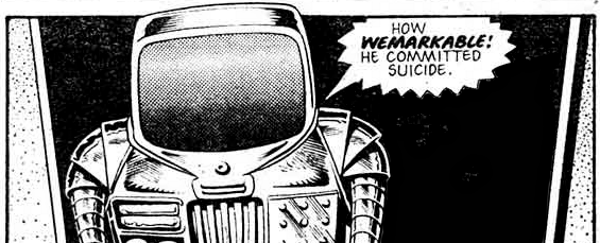

A beverage-serving droid with a speech impediment that became Dredd's servant. He was last seen tending to Mrs. Gunderson.
Art by Brian Bolland
| Story Title | Parts | Pages | w indicates a wraparound coverCovers | Year(s) | Issues | Writer | Artist | Colourist | Letterer |
|---|---|---|---|---|---|---|---|---|---|
From Judge Dredd[Robot Wars] | 8 | 40.5 | 10: Carlos Ezquerra 1 | 1977 | Reprints: JDA'86 (partial)10-17 | John Wagner | 1: Carlos Ezquerra 2,4,7: Ron Turner 3,6: Mike McMahon 5,8: Ian Gibson various | <-- 3pp, [b&w] | 1,5: John Aldrich 2: Bill Nuttall 3,4,6: Jack Potter 7: Tony Jacob 8: Peter Knight various |
From Judge Dredd[You Bet Your Life] | 1 | 5 | 0 | 1977 | Reprints: 26825 | John Wagner | Ian Gibson | <-- p5, [b&w] | John Aldrich Bill Nuttallvarious |
From Judge Dredd[The Neon Knights] | 1 | 6 | 0 | 1977 | Reprints: 2KA'8429 | Pat Mills | Ian Gibson | [b&w] | Tony Jacob |
From Judge Dredd[Walter's Secret Job] | 1 | 5 | 0 | 1977 | 33 | John Wagner | Ian Gibson | [b&w] | Tony Jacob |
From Judge Dredd[Mutie the Pig] | 2 | 9.5 | 0 | 1977 | Reprints: 351‑35234-35 | John Wagner | 1: Mike McMahon 2: Ian Gibson various | [b&w] | Tony Jacob |
From Judge Dredd[Voyage to Luna-1] | 1 | 5 | 0 | 1977 | 42 | John Wagner | Ian Gibson | [b&w] | Tony Jacob |
| [Tap Dancer] | 1 | 1 | 0 | 1978 | 50 | Joe Collins | Ian Gibson | [b&w] | Tony Jacob |
| [Shoot Pool!] | 1 | 1 | 0 | 1978 | Reprints: X3051 | Joe Collins | Ian Gibson | [b&w] | Tony Jacob |
| [Walter's Brother] | 5 | 5 | 0 | 1978 | 52-56 | Joe Collins | Brian Bolland | <-- | John Aldrich: 1 Tony Jacob: 2, 4‑5 Tom Frame: 3 various |
| [Radio Walter] | 1 | 1 | 0 | 1978 | 57 | Joe Collins | Brian Bolland | <-- | Steve Potter |
| [Masterbrain] | 1 | 1 | 0 | 1978 | 58 | Joe Collins | Brian Bolland | <-- | Tony Jacob |
| [The Fwankenheim Monster] | 6 | 6 | 0 | 1978 | 59-61, 67-68 | Joe Collins | Brian Bolland | <-- 4pp, [b&w] | Tony Jacob: 1 Pete Knight: 2‑3 Steve Potter: 4‑6 various |
| [Skateboarding Tips] | 1 | 0.5 | 0 | 1978 | 79 | unknown | Brian Bolland | [b&w] | unknown |
No supertitle. Faux advert. The Insult That Made a Robot Out of 'Walt' | 1 | 1 | 0 | 1978 | 82 | Gary Rice | Brendan McCarthy | <-- | Tony Jacob |
| [Meet Mek-Quake] | 2 | 2 | 0 | 1978 | 84-85 | Gary Rice | Brendan McCarthy | <-- | Paul Bensberg: 1 Jill Raphaeline: 2 various |
From Judge Dredd | [Judge Caligula]Crime and Punishment | 1 | 6 | 0 | 1978 | 86 | John Wagner | Brian Bolland | [b&w] | Tom Frame |
From Judge Dredd | [Judge Caligula] Featuring: ‑ Judge‑Tutor Pepper ‑ FergeeThe Day the Law Died | 20 | 116.5 | 89: Mike McMahon 94: Mike McMahon 98: Brian Bolland 105: Brian Bolland4 | 1978-1979 | 89-108 | John Wagner | Mike McMahon: 1‑3, 8‑9, 11‑12 Brett Ewins: 4, 5(P), 17(P) Brendan McCarthy: 5(I), 17(I) Brian Bolland: 6‑7(P), 10, 13‑14 Garry Leach: 6‑7(I), 15 Ron Smith: 16, 18‑20various | [b&w] | Tom Frame: 1‑2, 5‑20 Tom Knight: 3 Jack Potter: 4 various |
From Judge DreddA Tale From Walter's Scwapbook | 2 | 12 | 0 | 1979 | 119, 121 | John Wagner | Ron Smith | [b&w] | Tom Frame |
| [Eisner Block] | 1 | 8 | 0 | 1980 | Reprints: 611JDA'81 | Gary Rice | Brendan McCarthy | [greyscale] | Peter Knight |
From Judge Dredd[Synthi-Caff Vindilu] | 1 | 6 | 0 | 1980 | 191 | Alan Grant John Wagnervarious | Ian Gibson | [b&w] | Tom Frame |
| Woad to Wuin | 1 | 6 | 0 | 1981 | JDA'82 | Gary Rice | Steve Kyte | [b&w] | Steve Potter |
From Judge DreddDestiny's Angels | 8 | 66 | 281 [w]: Carlos Ezquerra 284: Carlos Ezquerra 286: Carlos Ezquerra 288: Carlos Ezquerra 1w,3 | 1982 | 281-288 | Alan Grant John Wagnervarious | Carlos Ezquerra | <-- 16pp, [b&w] | Tony Jacob |
| [Weal Wallie] | 1 | 1 | 0 | 1985 | JDA'86 | unknown | Brian Bolland | [b&w] | unknown |
From Judge Dredd Featuring Judge Grice.Inferno | 12 | 73 | 844: Cliff Robinson 848: Brian Bolland 2 | 1993 | 842-853 | Grant Morrision | Carlos Ezquerra | <-- | Tom Frame |
From Judge DreddGiant | 3 | + 3 credit pages28 | M2.52: Cliff Robinson 1 | 1994 | M2.50-M2.52 | John Wagner | Ian Gibson | <-- | Tom Frame |
From Judge DreddIncident at Rowdy Yates | 1 | 6 | 0 | 1999 | 1169 | John Wagner | Paul Marshall | Chris Blythe | Tom Frame |
From Judge DreddTurned Out Quite Nice Again | 2 | 12 | 1208: Cliff Robinson 1 | 2000 | 1207-1208 | John Wagner | Henry Flint | Len O'Grady | Tom Frame |
From Judge DreddThe Marriage Game | 1 | 12 | Cliff Robinson & Chris Blythe (C) 1 | 2003 | Reprints: M309 (supplement)M203 | John Wagner | Ian Gibson | <-- | Tom Frame |
From Judge Dredd: The Lost CasesRatted | 1 | 9 | Peter Doherty1 | 2010 | Reprints: M399 (supplement)M295 | Alan Grant | Anthony Williams | [b&w] | Ellie de Ville |
From Judge DreddTwenty Years to Midnight | 1 | 12 | 0 | 2010 | M302 | Al Ewing | Henry Flint | Chris Blythe | Annie Parkhouse |
From Judge DreddA Night in Sylvia Plath | 2 | 12 | 0 | 2014 | 1892-1893 | John Wagner | Colin MacNeil | Chris Blythe | Annie Parkhouse |
From Judge DreddLadykiller | 8 | 48 | 1991: Neil Roberts 1994: Ben Willsher 1998: Paul Marshall (a), Chris Blythe (c) 3 | 2016 | 1991-1998 | John Wagner | Carlos Ezquerra | <-- | Annie Parkhouse |
| >> Text Stories << | |||||||||
From Judge Dredd No supertitle.Tales of Dwedd | 1 | 4 | 0 | 1979 | 2KA'80 | Alan Grant | Brian Bolland reprints Brett Ewins various | [b&w] | n/a |
| >> Posters << | |||||||||
Subtitled: "2000AD Futuregraph".Walter the Wobot Bluepwint | 1 | 1 | 0 | 1978 | 53 | unknown | Kevin O'Neill | [b&w] | n/a |
Star Pin‑Up.Walter and Rowena | 1 | 1 | 0 | 1979 | 109 | n/a | Kevin O'Neill or Brian Bolland unknown | <-- | n/a |
Annotated diagram.Walter's Works | 1 | 1 | 0 | 1980 | JDA'81 | n/a | Kevin O'Neill | [b&w] | n/a |
Star Pin‑Up.Walter the Wobot | 1 | 1 | 0 | 1981 | 243 | n/a | Brian Bolland or ? unknown | <-- | n/a |
| Where Are They Now? - Walter the Wobot | 1 | 1 | 0 | 1990 | WS3 | n/a | Simon Jacob | [b&w] | n/a |
| >> Features << | |||||||||
| 2000 AD Fact-File: Walter the Wobot | 1 | 1 | 0 | 1981 | 2KA'82 | editorial | unknown | [b&w] | n/a |
Quiz.Slidewalk Talk! | 1 | 1 | 0 | 1984 | SFS7 | Walter | Reprints. Brian Bolland | [b&w] | n/a |
From 2000 I.D.Walter the Wobot | 1 | 1 | 0 | 1991 | JDYB'92 | editorial | Paul Marshall | [greyscale] | n/a |
From Tharg's Datachips#12: Walter the Wobot | 1 | 0.5 | 0 | 1996 | 995 | n/a | Steve Yeowell | <-- | n/a |
| year | episodes | pages |
| 1977 | 14 | 71 |
| 1978 | 25 | 54.5 |
| 1979 | 17 | 98.5 |
| 1980 | 2 | 14 |
| 1981 | 1 | 6 |
| 1982 | 8 | 66 |
| 1983 | 0 | 0 |
| 1984 | 0 | 0 |
| 1985 | 1 | 1 |
| 1986 | 0 | 0 |
| 1987 | 0 | 0 |
| 1988 | 0 | 0 |
| 1989 | 0 | 0 |
| 1990 | 0 | 0 |
| 1991 | 0 | 0 |
| 1992 | 0 | 0 |
| 1993 | 12 | 73 |
| 1994 | 3 | 28 |
| 1995 | 0 | 0 |
| 1996 | 0 | 0 |
| 1997 | 0 | 0 |
| 1998 | 0 | 0 |
| 1999 | 1 | 6 |
| 2000 | 2 | 12 |
| 2001 | 0 | 0 |
| 2002 | 0 | 0 |
| 2003 | 1 | 12 |
| 2004 | 0 | 0 |
| 2005 | 0 | 0 |
| 2006 | 0 | 0 |
| 2007 | 0 | 0 |
| 2008 | 0 | 0 |
| 2009 | 0 | 0 |
| 2010 | 2 | 21 |
| 2011 | 0 | 0 |
| 2012 | 0 | 0 |
| 2013 | 0 | 0 |
| 2014 | 2 | 12 |
| 2015 | 0 | 0 |
| 2016 | 8 | 48 |
| 2017 | 0 | 0 |
| 2018 | 0 | 0 |
Comic strip data (excludes other content):